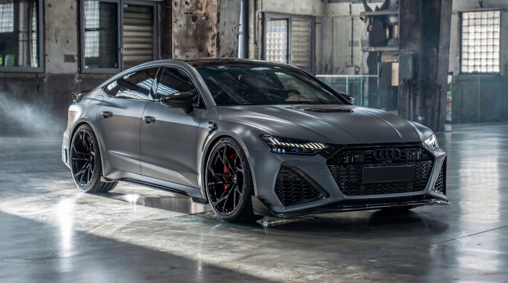
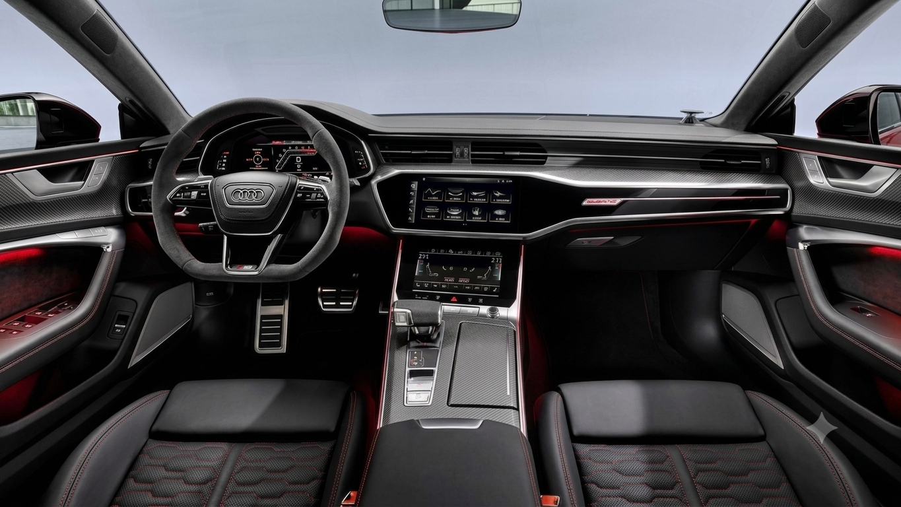

La Gran Turismo ad alte prestazioni
L'Audi RS 7 Sportback è l'incarnazione della filosofia Audi Sport che combina l'eleganza di un coupé a quattro porte con le prestazioni estreme di un'auto da corsa.
La RS 7 debutta al Salone Internazionale dell'Auto di Detroit nel 2013, basata sulla piattaforma A7. Fin da subito si posiziona come una delle più potenti "coupé" a 5 porte di lusso sul mercato. Montava un propulsore V8 biturbo da 4.0 litri, capace di erogare 560 CV, abbinato al cambio Tiptronic a otto rapporti e alla trazione integrale quattro. La sua linea sinuosa la distingueva dalle tradizionali berline sportive.
La seconda generazione, presentata nel 2019 e lanciata nel 2020, ha elevato ulteriormente gli standard. Mantiene il motore V8 da 4.0 litri, ma ora integrato con tecnologia Mild Hybrid (MHEV) a 48V per una maggiore efficienza e una risposta più pronta. La potenza iniziale è salita a 600 CV. Dal punto di vista estetico, è diventata ancora più aggressiva e muscolosa, condividendo pochissimi pannelli della carrozzeria con la A7 standard, sottolineando il seu status di vera vettura RS. È un'icona di lusso, sportività e tecnologia.
Un'estetica muscolosa che unisce eleganza sportiva e aerodinamica avanzata.


Dati tecnici della versione più recente e potente.
| MOTORE E PRESTAZIONI | |
|---|---|
| Motore | V8 Biturbo TFSI (Mild Hybrid) |
| Cilindrata | 3996 cc |
| Potenza Massima | 630 CV (463 kW) @ 6000-6250 rpm |
| Coppia Massima | 850 Nm @ 2300-4500 rpm |
| Accelerazione 0-100 km/h | 3.4 secondi |
| Velocità Massima (Limitata elettr.) | 250 km/h (estendibile a 280 o 305 km/h) |
| TRASMISSIONE E TELAIO | |
|---|---|
| Trasmissione | Tiptronic a 8 rapporti (Automatico) |
| Trazione | Integrale permanente quattro |
| Freni | Dischi in acciaio (Opzionali Carboceramici RS) |
| Sospensioni | Sospensioni pneumatiche adattive RS (Opzionali Dynamic Ride Control - DRC) |
| DIMENSIONI E CAPACITÀ | |
|---|---|
| Lunghezza | 5009 mm |
| Larghezza (escl. specchietti) | 1950 mm |
| Altezza | 1424 mm |
| Capacità Bagagliaio | 535 - 1390 litri |
| Peso a vuoto (EU) | Circa 2140 kg |